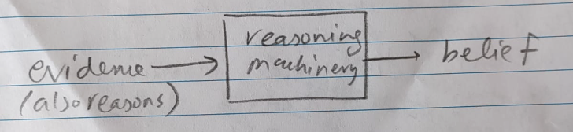

On Reason August 2026
—Where do reasons come from?
Quite some months ago, I submitted a paper titled “Deliberative Prediction” (not yet public), however when I did that I did not realise or fully grasp the extent of the topic I was dealing with. I still don't, but the submission led me to random explorations that started with political philosophy, covering probability theory, moral philosophy, and now the question of agency and identity. What started as a random and desperate attempt to understand the full implications of the work, in hindsight turned out to be an extraordinary summer. I've decided to cover these topics in the next few essays.
I'll not give details about the paper (and that is also not the point), but to anyone who has read some philosophy, the title is a misnomer. Prediction and Deliberation covers two different forms of reasoning that cannot be said to go together easily as I've made it so, without alluding to some philosophical baggage that the philosophers have carried along for so long. And hence, in this first part I'll focus on reason, especially theoretical reasoning and practical reasoning.
The movement of Enlightenment back in seventeenth century had people asking big questions like what to believe, and what to do, and to use the facility of reason to do so. For terminology, theoretical reasoning covers the question of what to believe, and practical reasoning concerns with intention. Both beliefs and intentions live in someone's head, and hence the aim is to provide certain guidelines or mechanisms as to what one believes and what one does, is in some sense, rational or guided by proper reasoning. Say I believe that the Earth is not flat: theoretical reasoning will concern with how did I come up to have such a belief, do I have sufficient and justified reasons for that, etc. Or I could believe that the said paper is going to be rejected, again do I have sufficient evidence to do so, and have I engaged in right kind of reasoning to have this belief. Having such answers are important for philosophers, as they can guide people towards better living their life.
As an example, a person who believes that the Earth is flat could be deemed irrational, and similarly the person who maintain the belief that the paper will be accepted despite all negative scores can be labelled as delusional or optimistic depending on what is the spectrum of the language. A person has to engage in reasoning to acquire such beliefs. Given the facts about the world (and this will be crucial soon), referred to as the evidence, the agent deploys some reasoning machinery to come with up with a belief. And it is not my point to justify it here, but probability and probability theory provides that machinery to represent as well as to reason with evidence. In fact, probability theory in the western Europe, has its origin in thinking about theoretical reasoning. I'll stop here, for now, about the theoretical reasoning, but here is a picture below to keep in mind.

Say now, on the other hand, I've formed the intention to wake up every morning at $4$ in the morning. As an intention, it is a product of practical reasoning, and as similarly as with the belief, we can ask is this intention somehow rational? What if I have never woken up before $7$ ever once in my life, is the reasoning that led me to have this intention rational. Or consider someone who has the intention to swim from Lisbon to Rio, is the “reasoning” that got into forming this intention rational?
Now here is the puzzle that makes this topic a rich of ore of philosophical work: in contrast to belief (or theoretical reasoning) where it was easy to at-least start thinking of saying something about “sound reasoning” with the facts and evidence provided by the world, and the resulting belief out of this reasoning machinery again subjected to the evaluation against the world, these things go completely missing when does one start to think about intention, and to set the standards of sound practical reasoning. Yes, I haven't woken up at all before $7$ once in my life, that makes the “belief” of me waking up at $4$ tomorrow relatively low (that's how the world is), but would that make my “intention” of waking up tomorrow at $4$ somehow faulty: no, I could just summon a whole lot of will, and can just wake up tomorrow at $4$. What about the intention of swimming from Lisbon to Rio? I like these sentences from the SEP article on practical reason:
“The intention to go shopping on Wednesday, for instance, is not a state that would or should be abandoned upon ascertaining or confirming that one has not (yet) gone shopping on Wednesday; rather a person with such an intention will ordinarily try to bring the world into alignment with the intention, by going shopping when Wednesday comes around. Intentions are in this way more like an architect's blueprints than like sketches of an already-completed structure (Anscombe 1957; cf. Velleman 1989). Put in terms of an influential and controversially discussed metaphor first introduced by Searle (1983), beliefs have a ‘mind-to-world direction of fit’, while intentions seem to have a ‘world-to-mind direction of fit’ (see Frost 2014 for a critical overview of different accounts of this distinction).”
To give a brief summary of practical reasoning (from what I've gathered), the picture in the case of practical reasoning is not so clear cut as can be drawn in the case of theoretical reasoning. There are two questions: where the reasons come from? And how do we set the standards for good practical reasoning? It is somewhat clear that my intention of waking up every morning at $4$ is not so irrational, however swimming from Lisbon to Rio is. In contrast to theoretical reasoning, the challenge is there is no world out there to objectively set the reasons as well as the standards of practical reasoning, and even when there is, practical reasoning require not paying heed to it. Another example: consider there is relatively less chance for an individual of certain group to succeed in a philosophy academia (this is a fact of the world), would this factor into the intention of an individual of this group to decide whether to pursue academia. It could, but would it necessarily dictate? No. The individual can decide to pursue academia, and there probably is no irrationality in it. However, the world is also hostile to someone swimming from Lisbon to Rio, but we would reason this intention as irrational. I'm just belabouring the points again and again to actually see difficult is it as a task for the philosophers of practical reasoning to operationalise the rationality of it. The problem stands: where do the reasons come from? (Not from the world, the world can give you the information, but it does not have to dictate the intention) And what is a good standard or machinery for practical reasoning (why does it look that the person forming the intention to pursue academia has maybe not done a super faulty reasoning vs the person with the swimming intention seemingly has).
The problem is real, and I'll cover it in the next few essays.